Florence Mary Gardiner, Evolution of Fashion. Davis, ed. from the 1897 edition. [eng]. Cited by chapter/paragraph.
Passages v.1-v.43
urn:cts:fuTexts:gardiner.eof.davis:v.1-v.43
v.1CHAPTER V.
v.2BRIDAL COSTUME.
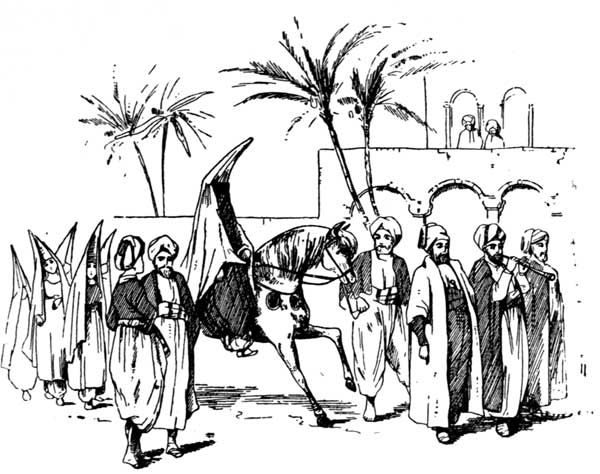
v.4Certain curious customs have been associated with the Ordinance of Marriage from a very early period, and among others may be mentioned the union of near relations in barbaric or semi-barbaric tribes; the providing of husbands and wives for a family according to seniority (so that the younger members had to possess their souls in patience till the elder ones were disposed of); the paying of an equivalent for the bride's services to her father in money or kind; and festivities often lasting over several days to celebrate the nuptials. The Rabbins acquaint us with the fact that seven days' feasting was an indispensable obligation on all married men, and that the bride was not consigned to her husband until after the days of feasting had expired. They were generally spent in the house of the woman's father, after which she was conducted in great state to her husband's home. When the bride was a widow, the festivities only lasted for three days. Customs in the East are perpetuated from one generation to another, and we now find among the inhabitants of the Orient the same mode of life as was adopted by the patriarchs of old. The description of the wooing of Isaac and Rebekah, for example, so graphically told in Genesis, differs in few respects from that of a young couple of the same rank in the present day. Handsome presents, consisting of jewels, apparel, &c., are presented to the woman and her family, and form part of her dower in case of divorce. Rich shawls, fine dresses, personal ornaments, money, and a complete outfit of domestic utensils are always included in such a gift. Among some of the Arab tribes the dower received on such occasions, and called the "five articles," consists of a carpet, a silver nose ring, a silver neck chain, silver bracelets, and a camel bag. Matrimonial overtures are generally made by the parents of the contracting parties in Persia, but after all has been concluded, the bride-elect has nominally the power, though it is seldom exercised, of expressing her dissent before the connection receives its final sanction. Among many Bedouin tribes the woman is not suffered to know until the betrothing ceremonies announce it to her who is to be her husband, and then it is too late to negative the contract, but she is permitted to withdraw from her husband's tent the day after her marriage, and to return to her father; in which case she is formally divorced, and is henceforward regarded as a widow. On the value of her ornaments the Eastern bride bases her claim to consideration; and though the Arab, as a rule, cares little for his own dress, he decks his wife as richly as possible, that honour may be reflected upon himself and his circumstances. The leg ornaments and bracelets are often enormously thick, and have no fastenings, but open and compress by their own elasticity. It is not unusual to wear several on the same arm, reaching to the elbow. They form a woman's sole wealth, and are not treasured up for special occasions, as is usual among Western nations, but are used as part of of the daily costume. Various materials are employed in their manufacture; gold is necessarily rare, silver less so, while others are composed of amber, coral, mother-of-pearl, and beads.
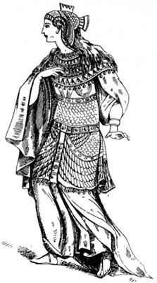
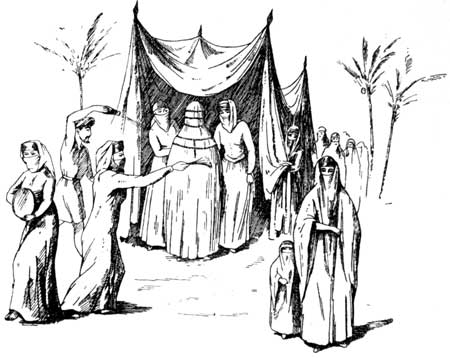
v.7We are told, when Rebekah approached her future home and saw a man walking in the distance, she evinced a curiosity, natural under the circumstances, and inquired about him; and on discovering that it was Isaac, "she took a veil and covered herself." It is still almost universal in the East for a woman, whose face is not concealed on other occasions, to envelop her head and body in an ample veil before she is conducted to her husband, and it is considered an indispensable part of the bridal costume. The details of the home coming are modified by the local usages and religions of the different countries. In Syria, Persia, and India, the bridegroom, in person, brings home the bride; in some other countries this duty devolves on a near relative, and he remains at home to receive the lady on her arrival. From various sources, but particularly from indications in Scripture, we may gather that the Jews employed either of these methods, according to circumstances. Again, in Egypt the bridegroom goes to the Mosque when his bride is expected, and returns home in procession after she has arrived. In Western Asia the procession usually walks, if the bride's future house is at no great distance in the same town. In such cases she is often partially covered by a canopy, and in Central and Eastern Asia it is the rule for her to be mounted on a mare, mule, ass, or camel, unless she is carried in a palanquin. Much, of course, depends on the social position of those married. Music attends such processions, and often dancing; the Jews certainly had the former, and some think the latter also, at least, in the time of our Saviour.
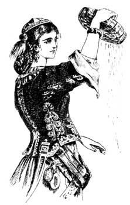
v.9In Halhed's translation of the Gentoo Laws, and in Mr. Roberts's "Oriental Illustrations," reference is made to the custom of marrying the elder sister first, and the same usage is observed with regard to the brothers. When, in India, the elder daughter happens to be blind, deaf, dumb, or deformed, this formality is dispensed with; and there have been cases when a man, wishing to obtain a younger daughter, has used every means in his power to promote the settlement of his future sister-in-law, so as to forward his own nuptials. Fathers, too, will sometimes exert their powers to compass the marriage of the elder daughter, when a very advantageous offer is made for the younger one.
v.10It is generally believed that Psalm xlv., commonly known as "The Song of Loves," was composed on the occasion of Solomon's marriage--probably to Pharaoh's daughter; and here we find the Egyptian bride's dress described as "all glorious within and wrought of gold, a raiment of needlework." Both expressions refer to the same dress, and imply that the garment was embroidered with figures worked with threads of gold. The Egyptians were famous for their embroideries, and some mummies have been found wrapped up in clothing curiously ornamented with gold lace. At the present day, both in Egypt and Western Asia, it is usual for ladies of the highest rank to employ much of their time in working with the needle linen and cotton tissues in gold and silver thread and silk of different colours.
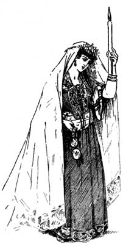
v.12The use of nuptial crowns is of great antiquity. Among the Greeks and Romans they wore chaplets of flowers and leaves, and the modern Greeks retain this custom, employing such chaplets, decorated with ribbons and lace. Modern Jews do not use crowns in their marriage ceremonies, and they inform us that they have been discontinued since the last siege of Jerusalem by the Romans. The information which Gemara gives on this subject is briefly that the crown of the bridegroom was of gold and silver, or else a chaplet of roses, myrtle, or olives, and that the bride's crown was of the precious metals. There is also some mention of a crown made of salt and sulphur, worn by the bridegroom, the salt transparent as crystal, the figures being represented thereon in sulphur. Crowns play an important part in the nuptial ceremonies of the Greek Church; they are also still used by Scandinavian brides.
v.13The ring in former days did not occupy the prominent position it does now, but was given, with other presents, to mark the completion of the contract. Its form is a symbol of eternity, and signifies the intention of both parties to keep the solemn covenant of which it is a pledge, or, as the Saxons called it, a "wed," from which we derive the term wedding. The Jews have a law which proclaims that the nuptial ring shall be of certain value, and must not be obtained by credit or gift. Formerly they were of large size and elaborate workmanship, but now the ordinary plain gold hoop is used.
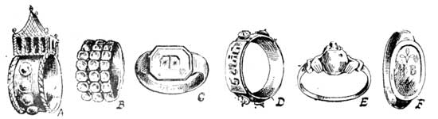
v.15A wedding ring of the Shakespearian era has a portrait of Lucretia holding the dagger, the reverse side of the circle being formed by two clasped hands. This is a very common shape, and is shown in the illustration of the English wedding-ring E, dated 1706, where white enamel fingers support a rose diamond. The modern Italian peasant wedding-ring B is of gold in raised bosses, while C is of silver; F, bearing initials on vezet, is of bronze. A is a handsome Jewish wedding-ring, bearing the ark, and D also has a Hebrew inscription.
v.16The gimmal betrothal ring was formerly a favourite pattern, and consisted of three circlets attached to a spring or pivot, and could be closed so as to appear like one solid ring. It was customary to break these asunder at the betrothal, the man and woman taking the upper and lower ones, and the witness the intermediate ring. When the marriage took place these were joined together and used at the ceremony. During the sixteenth and seventeenth centuries it was a common practice to engrave these emblems of affection with some appropriate motto. It was from Pagan Rome that European nations derive the wedding-ring, as they were used in their betrothals long before there is any trace of them elsewhere.
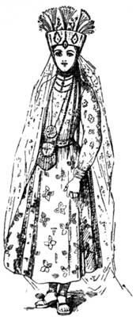
v.18In describing the bridal costumes of different nations, it should be distinctly borne in mind that a large majority of the upper classes wear on such occasions the traditional white satin and orange blossoms with which we are all familiar. Many, however, prefer the picturesque national costume associated with the land of their birth, and it has been my principal object, in selecting the illustrations, to make them as typical as possible.
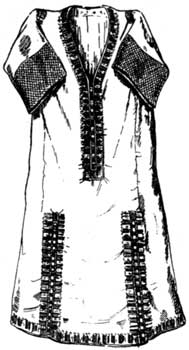
v.20(_From South Kensington Museum_)]
v.21The Greek marriage service is full of symbol, and the sketch gives a good idea of the bridal costume. The bridesmaid is attired in a gold embroidered jacket, a skirt of brilliant colouring, and the crimson fez--the usual head-gear of a Greek maiden. She is depicted scattering corn, an ancient rite always performed at the conclusion of the ceremony. As she gracefully sways backwards and forwards, to the accompaniment of the jingling coins, which do double service as dowry and trimming, it is a pose and dress at once graceful and free. Formerly a wedding garment was often passed down from mother to daughter, and such an example is given in the soft yellow silk robe, lined with white and enriched with elaborate embroidery. Tiny stars in delicate shades of red, blue, and green, divided by black lines form the design and proclaim the industry and skill of the worker. These robes, however, have not been used in Greece since the beginning of the seventeenth century.
v.22In Japan, the beautiful land of the lily and chrysanthemum, the bride usually takes little more to her husband's home than her trousseau, which is ample enough, as a rule, to satisfy even a woman's passion for dress. The nuptials take place in the evening, and the bride is garbed in virgin white robes, figured with a lozenge design. These garments are the gift of the bridegroom, and in them she passes from the home of her girlhood to that of her husband. The household gods of both families are assembled before an altar decked with flowers and covered with offerings. Near stands a large table, with a dwarf cedar; it also holds the Japanese Adam and Eve, and the mystic turtle and stork. The two special attendants of bride and bridegroom are called butterflies, and in their dress and colouring rival these beautiful insects, which in this country are the symbol of conjugal felicity. The most solemn part of the marriage ceremony is the scene of the two-mouthed vase. At a signal, one butterfly fills the vase, and the other offers it to the kneeling couple, the husband drinking first, and afterwards the wife. This draught signifies that henceforward they are to partake equally of the bitters and sweets of the coming years. Rice is thrown from either side, so as to mingle, and the wicks of two candles are placed together, to symbolize the joining of body and soul.
v.23The marriage processions of other Oriental nations have already been referred to, and in India it is customary to perform the ceremony under a species of canopy richly ornamented and lighted by lamps. The bride wears, in addition to the native costume, a curious veil composed of strings of gold beads and tassels. In Hindu marriages the sacred fire or _oman_ (which is constantly renewed by throwing upon it scented oils, sandalwood, incense, and other aromatic perfumes) is a prominent feature, and the union of a couple is consecrated by sprinkling a handful of saffron, mixed with rice flour, on their shoulders. Finally, the husband presents his wife with a little golden image called _talee_, a substitute for the wedding ring, and worn by Indian women as their symbol of matrimony.
v.24A missionary thus describes a Buddhist marriage:--"The bride, loaded with jewellery, accompanied by women richly attired, entered the room, and sat down with the bridegroom on the floor. A number of candles were then lighted, and the company saluted and congratulated the happy couple, and expressed their kind wishes by blowing smoke towards them, while a band of string instruments discoursed sweet music. Two cushions were placed before the bridegroom, on which a sword was laid, and food was also near them. Next the hands of each were bound together, then the two to each other with silken threads. This act was performed by the nearest relative present, and completed the ceremony." Brief, indeed, are the forms of marriage indulged in by the people of Borneo. Each of the contracting parties chews a betel nut; an elderly woman mutters some sort of incantation, and brings the heads of bride and bridegroom in close contact, after which they are declared man and wife, and are no longer regarded as twain, but one flesh. The Cherokee form of marriage is perhaps the most simple. The two join hands over a running stream, emblematic of the wish that their future lives, hopes, and aspirations, should flow on in the same channel. A peculiar custom of the Lascars is the putting of a ring on the great toe when they marry. Mrs. Bishop, who has explored Tibet and studied the habits and customs of the people, informs us that polyandry is favoured by the women of that country. The heir of the land and eldest son appears to be the only member of the family who can contract a marriage in the legal sense as we understand it, but all his brothers are accepted by the wife as inferior or subordinate husbands. By this means they are kept well under the control of the superior husband, whom they regard as the "Big Father," and, as a matter of form, any children who may be born are accepted by him.
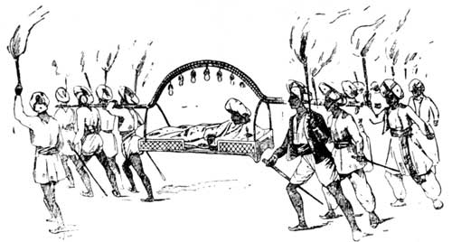
v.26Thus the whole family are attached to the soil, and seem to work in concord, and the women have the satisfaction of knowing that in the average course of Nature they can never become widows, and that there will always be someone to work for them and their offspring. "It is the custom for the men and women of a village to assemble when a bride enters her home with her husbands, and for each of them to present her with three rupees. The Tibetan wife, far from spending these gifts on personal adornment, looks ahead, contemplating possible contingencies, and immediately hires a field, the produce of which is her own, and accumulates from year to year, so that she may not be portionless should she desire a divorce."
v.27The African tribes, of course, differ materially in their marriage customs, but some form of exchange for the services of the woman are insisted on, and often take the shape of a present of cattle to the bride's father. On the West Coast, in the neighbourhood of Gaboon, where slavedom is recognised, there is an understanding that a wife may be purchased for a slave bundle, valued at about E6 in English money, and there appears to be no sliding scale as to youth, beauty, form, or degree. A bundle contains specimens of every article sold by a general storekeeper. The most important features of a slave bundle are a Neptune, or brass pan used for making salt, which is a current article of commerce, and a piece of native cloth, manufactured by these people for dress purposes, from a species of palm which grows on the river banks in great luxuriance. Both sexes anoint themselves with palm oil and other greasy substances, and no greater compliment can be paid to an African belle than to say she looks "fat and shining."
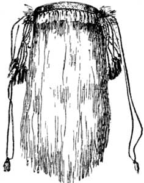
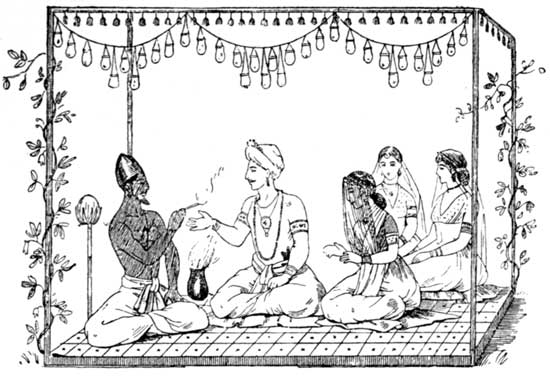
v.30Mr. Hutchinson, in his interesting work, "Ten Years in Aethiopia," gives a quaint and amusing account of the toilet of a Fernandian bridegroom: "Outside a small hut, belonging to the mother of the bride expectant, I soon discovered the happy bridegroom undergoing his toilet at the hands of his future wife's sister. A profusion of Tshibbu strings being fastened round his body, as well as his legs and arms, the anointing lady, having a short black pipe in her mouth, proceeded to rub him over with Tola pomade. He seemed not altogether joyous at the anticipation of his approaching happiness, but turned a sulky gaze now and then on a piece of yam which he held in his hand, and which had a parrot's red feather fixed on its convex side. This was called 'Ntshoba,' and is regarded as a protection against evil influences on the important day. The bride was borne down by the weight of rings and wreaths and girdles of Tshibbu. Tola pomatum gave her the appearance of an exhumed mummy, save her face, which was all white; not from excess of modesty, for the negro race are reported to blush blue, but from being smeared over with a white paste, the emblem of purity." What a hideous substitute for the classical wreath of orange blossoms, and what a contrast must be offered when the cosmetic peels off and displays the dusky skin upon which it is laid!
v.31According to Russian law, no man can marry before he is eighteen years of age, or a woman before she is sixteen; nor after he is eighty, and she is sixty. Priests are permitted to marry once. Secret marriages without witnesses are regarded as invalid, and both bride and bridegroom must be baptized persons. If a Russian takes a foreigner for a wife, she must bind herself in writing to bring up any children she may have in the Greco-Russian faith. According to an ancient custom the bridegroom presents his bride with the costume and jewellery worn at the marriage. The dowry comes from her family, and consists of a complete wardrobe, silver, linen, and household furniture of all kinds. The hair of an unmarried woman of the peasant class in Russia is dressed in a single plait hanging loose upon the shoulders, and tied with ribbon. After marriage it is arranged in two braids coiled round the head, covered with a cap tied behind, or with a cotton or silk handkerchief and a little lappet of linen rests on the forehead, and is considered an inevitable symbol of marriage. Marriages are performed after banns, and much of the finery used by the lower classes is hired for the occasion; and the crowns used in the Russian ceremony are generally the property of the Church. Formerly they were worn for a week, but this practice has been discontinued.
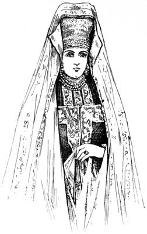
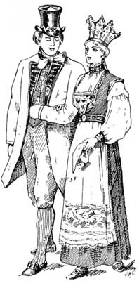
v.34There are three distinct periods in the life of a Norwegian woman, and each one has marked characteristics, particularly as regards dress. During girlhood, up to the time of confirmation, a solemn occasion for which there is much preparatory training, girls do not usually go from home to work, or earn their own living. Among the poorer classes this ceremony takes place when they are about fifteen. Their petticoats are short and their hair is arranged in two long plaits. After confirmation they are supposed to regard life from its more serious aspect, and to engage themselves with various duties, according to their station. The third stage, of course, is married life, and it should be stated that neither men nor women can enter upon the holy contract unless they can bring proof of their confirmation, and can show ample evidence of sufficient means to provide for a household. The marriage is preceded by a betrothal ceremony, when the young couple go to the church, accompanied by their friends, and exchange rings of plain gold and presents of jewellery and apparel, which must be worn on the wedding day. At her marriage the peasant bride wears the crown. It has a rim of brass to fit the head, and the upper portion is of silver and gold, sometimes embellished with precious stones. Such crowns are generally heirlooms, and it is not uncommon for all the brides of one family for centuries to wear the same adornment for the head. A very usual dress on such an occasion is a plain skirt of some woollen material, with a bodice and full sleeves of snowy linen, a corselet of red and green, ornamented with bands and buckles, and a white apron trimmed with embroidery. A silver-gilt breast ornament is worn by Swedish brides. The band is wrought with bosses, and depending from it are small beaten discs, and a medallion bearing the sacred initials I.H.S. The bridegroom's hat in the illustration was probably an heirloom too, from its shape and fashion. He wears a red waistcoat cut short and fastened with brass buttons, and a loose cloth coat ornamented with embroidered revers. The black small clothes show to advantage a well-shaped leg, and on the feet are low shoes. Usually the festivities in connection with a peasant wedding in Norway are kept up for three days, and during the time there is much feasting and merrymaking among the friends of bride and bridegroom.
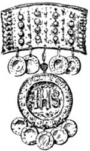
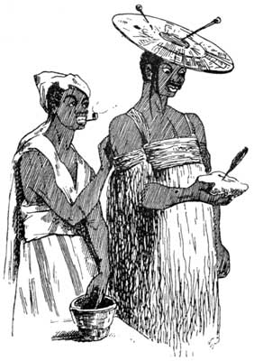
v.37Gipsies are, as a rule, married at a very early age. A girl is generally betrothed at fourteen, and becomes a wife two years later. The marriage ceremony is performed by a priest wearing a ram's horn as a sign of office, and, as becomes a nomadic race, the four elements--fire, air, earth, and water--take a prominent position. The horn is the symbol of authority, and is often made use of in Scripture. So much were rams' horns esteemed by the Israelites that their priests and Levites used them as trumpets in the taking of Jericho; and modern Jews when they confess their sins announce the ceremony by blowing a ram's horn. In ancient Egypt and other parts of Africa, Jupiter Ammon was worshipped under the figure of a ram, and to this deity one of these animals was sacrificed annually. It seems to have been an emblem of power from the remotest ages. It would therefore appear that the practice of the gipsy priest wearing a ram's horn suspended from a string round his neck at a marriage is derived from the highest antiquity, and undoubtedly points to the Oriental origin of the gipsy race.
v.38Various expedients have been resorted to by different rulers of sparsely populated kingdoms to encourage men to enter the married state. In ancient Rome the law forbade that a bachelor should inherit any legacy whatever, and in Sparta, under the rule of Lycurgus, they were not permitted to have a part in the government, nor might they occupy any civil or military post. They were excluded from participation in public festivals, except on certain fixed occasions, and then the women had the right to lead them to the altars, where they were beaten with rods to the sound of scornful songs. As late as the reign of William and Mary, widowers were taxed in England at the following rates:--Dukes, E12 10s.; lower peers a smaller sum, and commoners one shilling each, if they elected to remain in a state of single blessedness. Widows also, especially those of high degree and fortune, were encouraged to dip again in the matrimonial lottery, and children were betrothed at a very tender age.
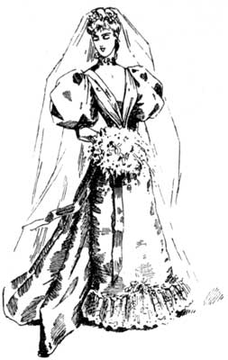
v.40Bridesmaids in Anglo-Saxon times attended on the bride, and performed specified duties, particularly in the festivities which usually followed on such occasions. Even during the earlier portion of the present century it was a common custom for one to accompany the bridal couple on their honeymoon; and it was also her duty to prepare and present the "benediction posset," which is referred to by Herrick in "Hesperides:"--
v.41"A short sweet prayer shall be said, And now the posset shall be made With cream of lilies not of kine And maiden blush for spiced wine."
v.42The fashion of brides wearing spotless white is a comparatively modern one. From accounts of bridal gowns in bygone times, we find rich brocades, golden tissues, and coloured silks were employed for this purpose; and at the present day white is considered only appropriate to the virgin, and is absolutely dispensed with by those women who have been married before.
v.43Of modern marriage customs in England there is no occasion to speak, for what woman is there among us who has not made an exhaustive and complete study of this vital matter? It may, however, comfort those who are beginning to wonder if marriage and giving in marriage is going out of fashion, to know that during the first quarter of 1894, 95,366 persons were joined together in the British Islands, an increase of 18 per cent. over the first three months of the previous year, 1893 and 9 per cent. over the mean rate for the same quarter for the preceding ten years. Figures are incontrovertible facts, so our ears need no longer be assailed by the bitter cry of "DARKEST SPINSTERDOM."